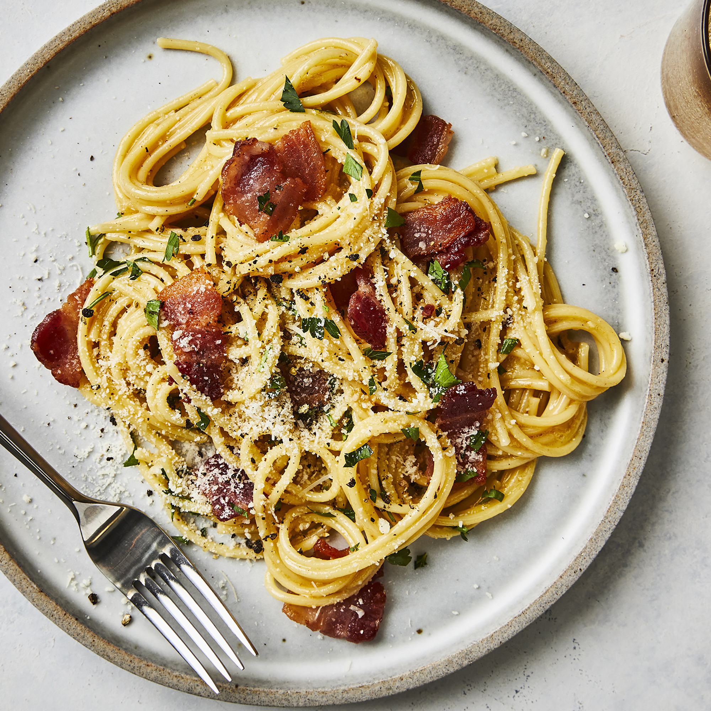

Spaghetti Carbonara

A super rich, classic 'bacon and egg' spaghetti dish. Great to serve for company. This recipe also makes an unusual brunch offering.
Ingredients
- 1 lb spaghetti
- 1 tbs olive oil
- 8 slices bacon, diced
- 1 tbs olive oil
- 1 onion, chopped
- 1 clove garlic, minced
- 1/4 cup dry white wine
- 4 eggs
- 1/2 cup grated Parmesan cheese
- 1 pinch salt and black pepper
- 2 tbs chopped fresh parsley
- 2 tbs grated Parmesan cheese
Steps
- In a large pot of boiling salted water, cook spaghetti pasta until al dente. Drain well. Toss with 1 tablespoon of olive oil, and set aside.
- Meanwhile in a large skillet, cook chopped bacon until slightly crisp; remove and drain onto paper towels. Reserve 2 tablespoons of bacon fat; add remaining 1 tablespoon olive oil, and heat in reused large skillet. Add chopped onion, and cook over medium heat until onion is translucent. Add minced garlic, and cook 1 minute more. Add wine if desired; cook one more minute.
- Return cooked bacon to pan; add cooked and drained spaghetti. Toss to coat and heat through, adding more olive oil if it seems dry or is sticking together. Add beaten eggs and cook, tossing constantly with tongs or large fork until eggs are barely set. Quickly add 1/2 cup Parmesan cheese, and toss again. Add salt and pepper to taste (remember that bacon and Parmesan are very salty).
- Serve immediately with chopped parsley sprinkled on top, and extra Parmesan cheese at table.